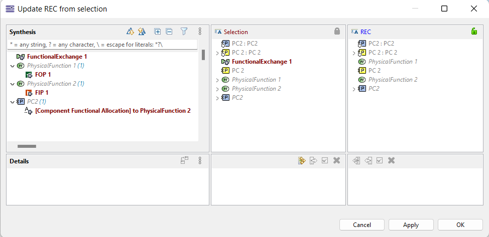

Perform a change on elements that are part of the REC. Here, a Function and two Functional Exchanges are added.
Select at least one original element of the REC and from the contextual menu, choose ‘Update REC from selection”

| The Semantic Browser can be useful to identify the selection of the right REC. |
The REC definition dialog appears, including the new elements

Click on OK. This will open the DiffMerge view. Press 'Apply' to update the rec to include all additional changes to the REC (additional information about this dialog is available in the Model DiffMerge section) .

A merge impact dialog will open. This dialog displays the applied changes. Press OK to apply the changes and close the merge view or Cancel to discard changes and return to the merge view.

Validate the new REC content and check the result in the Semantic Browser for example.

In the wizard "Update REC from selection" select one or more REC elements and press the button available on the right side of the wizard.

It is also possible to do the same via properties view by selecting "Catalog Element Link" contained by REC in Project Explorer.

Select a RPL element and in the contextual menu:

| The Semantic Browser can be useful to check if the selection is about the right RPL associated with the right REC. |
The REC instantiation wizard opens and in the left tree, the new elements appear.

Perform modifications if needed (e.g. choosing specific locations for the new elements, modifying the suffix) and click on OK. This will open the merge dialog. Select 'Apply' to update the RPL with additional changes or merge selected changes individually. Confirm the following merge impact dialog to perform the update.
If the suffix is modified, all elements that are intended to be renamed will be updated to have the name of the corresponding REC element with the new suffix. Similarly, if a REC element was renamed, the corresponding RPL elements will be updated with the new REC name and the current RPL suffix. Also, if an existing element has no suffix but its corresponding REC element was marked as having to be renamed, it will be updated with the RPL suffix.
Update the diagram to see the result.

Perform a few modifications on elements belonging to a RPL.

From the contextual menu, select:

| The Semantic Browser can be useful to check if the selection is about the right RPL associated with the right REC. |
This opens the REC definition dialog. The changes are visible in the tree.

From here, the behavior is the same as when the definition update was created directly from the REC elements.